诊断图说明
这些图片来自项目原有的 strict_matlab 处理结果。图中幅度没有完成物理功率标定，单位只用于相同设置下的数值比较。
1. 原始采样值
 横轴是整数在文件中的编号，纵轴是原始数值。数值长期停在量程端点可能表示饱和，连续零值可能提示采集异常。下半图按奇偶位置拆分；原代码假设的格式是 [I0,I1,Q0,Q1]，所以每条奇偶序列都混有 I 和 Q，不能把两条线分别称作 I、Q。
横轴是整数在文件中的编号，纵轴是原始数值。数值长期停在量程端点可能表示饱和，连续零值可能提示采集异常。下半图按奇偶位置拆分；原代码假设的格式是 [I0,I1,Q0,Q1]，所以每条奇偶序列都混有 I 和 Q，不能把两条线分别称作 I、Q。
回到原理与代码。
2. 单次扫频的 I/Q
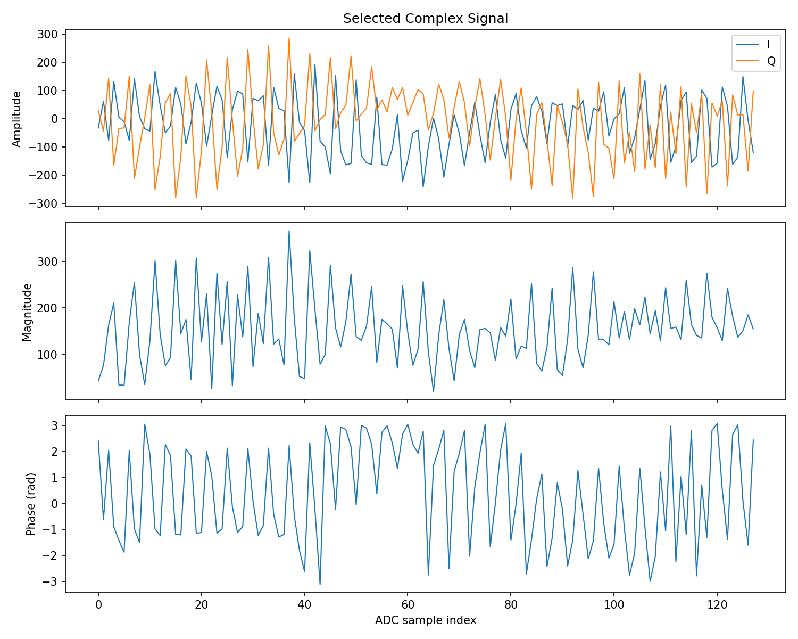
横轴沿同一次扫频的采样点变化。I、Q 显示采样值随时间的变化；幅度接近零时，相位通常受噪声主导。这里沿用原程序的四整数配对。
回到原理与代码。
3. I/Q 散点
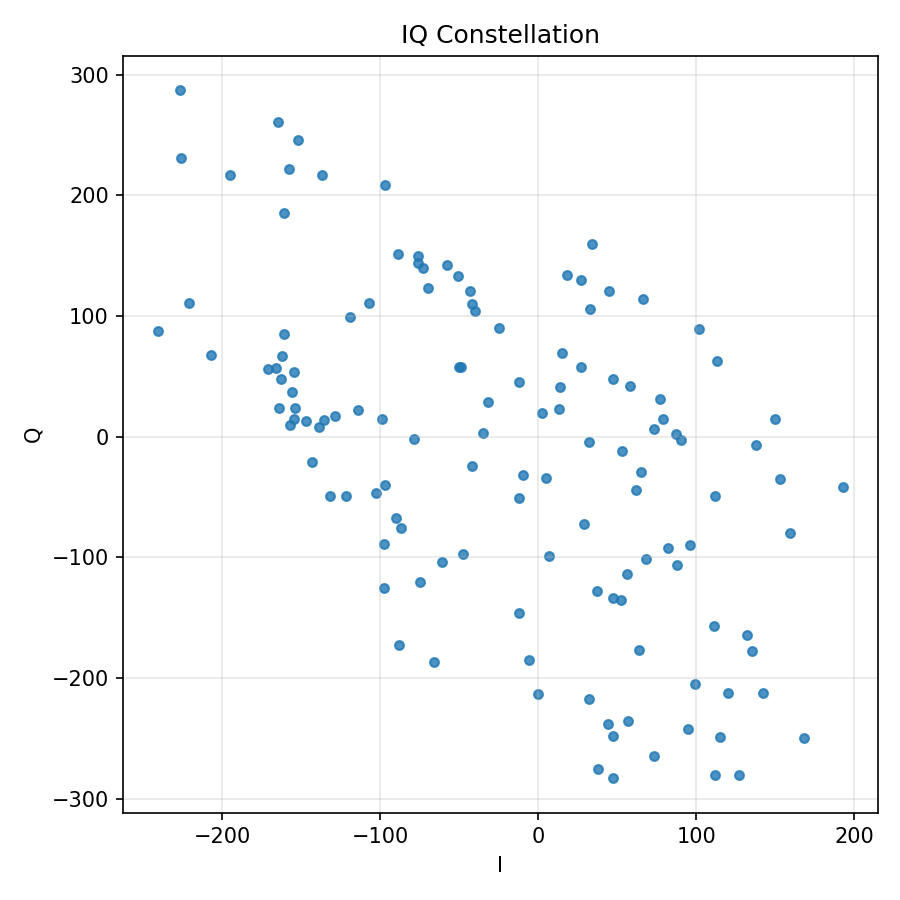
横轴 I、纵轴 Q，每个点是一对采样值。它可以显示中心偏移和幅度分布，但点的时间顺序已经丢失。不能仅凭散点像圆就认定相位测量正确。
回到原理与代码。
4. 单次距离谱
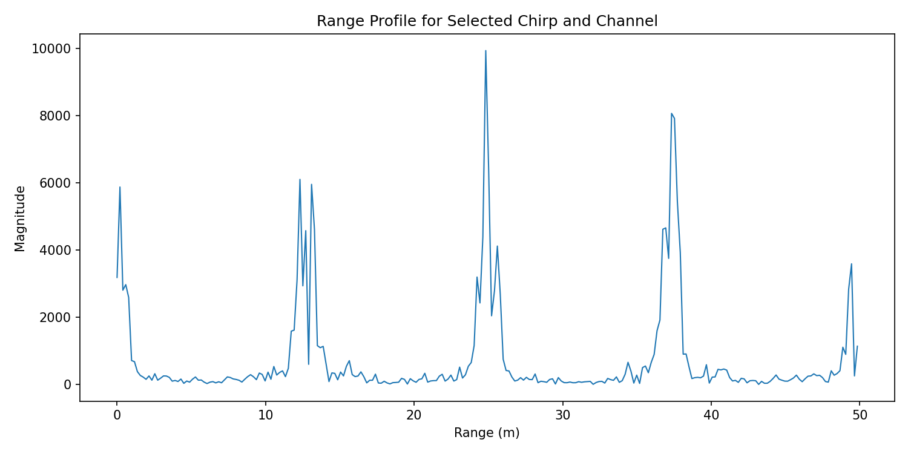
横轴是代码换算出的距离，纵轴是未标定的 FFT 幅度。峰的位置对应较强的频率分量。按本教程的正负频率区间，完整 FFT 的后半段表示负频率，应先按频率符号与有效拍频范围选择数据；把它全部套入递增距离轴会误标为更远的目标。
回到原理与代码。
5. 平均距离谱
 这是跨轮次和帧的幅度平均。相邻重复峰约相隔 64 格。重复峰可能由数据排列错误产生，跨帧平均不会消除这种系统性结构。
这是跨轮次和帧的幅度平均。相邻重复峰约相隔 64 格。重复峰可能由数据排列错误产生，跨帧平均不会消除这种系统性结构。
回到原理与代码。
6. 距离—时间图
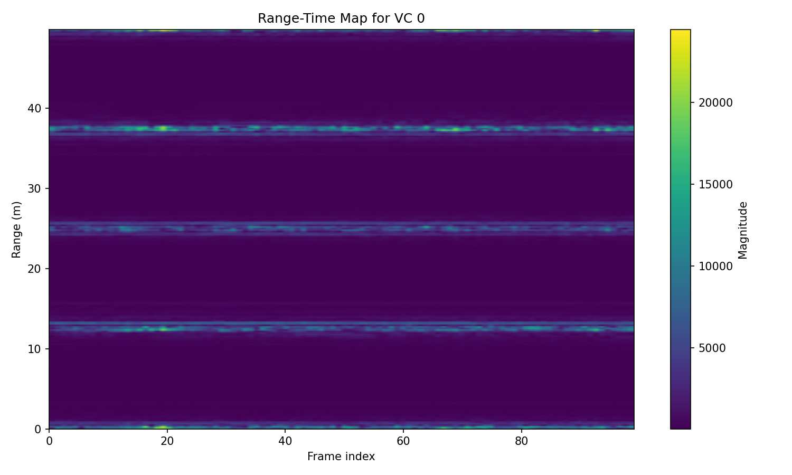
横轴是帧编号，另一轴是距离，颜色表示每帧的平均幅度。水平条纹说明某个距离格长期较强，但可能是稳定背景或重复伪影；这张图没有目标关联和跟踪。
回到原理与代码。
7. 相位与位移
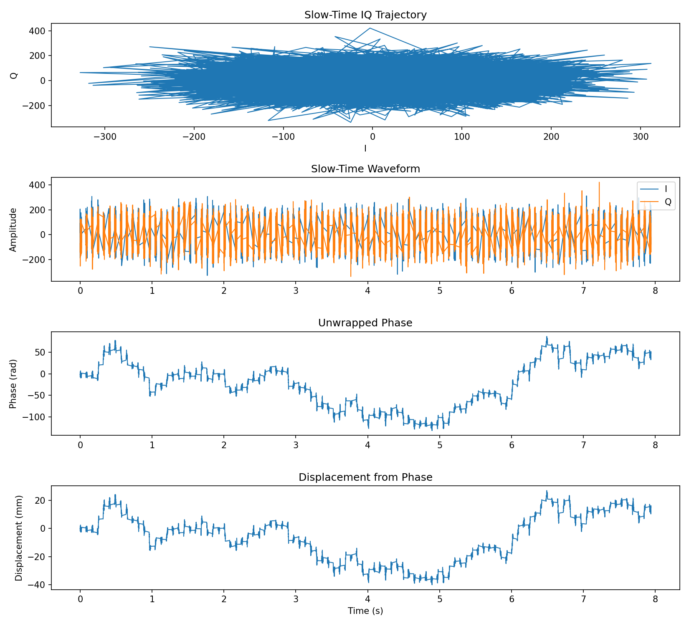
三幅子图分别为 I/Q、相位与位移。位移由相位变化乘以 λ/(4π) 得到。第 30 格信号较弱，噪声引起的相位变化也会被换算成位移，因此图中的几十毫米变化尚不能归因于目标运动。
回到原理与代码。
8. 跨帧频谱
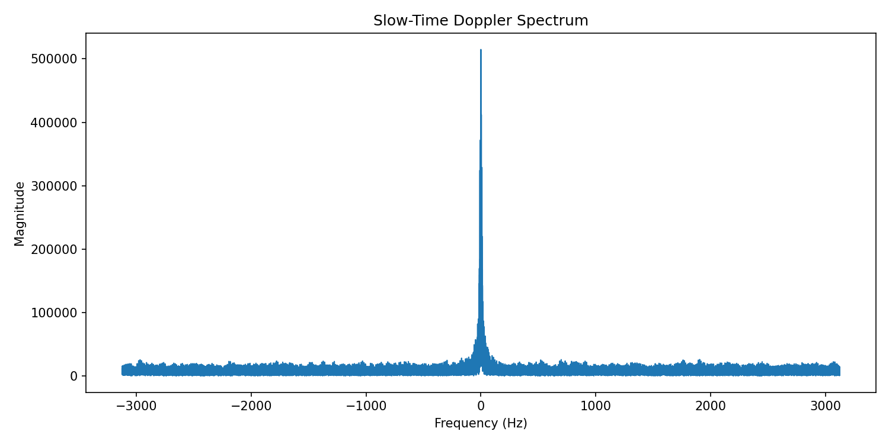
横轴是按 160 µs 插值网格得到的频率，纵轴是频谱幅度。约 74% 的点由帧间插值补出，因此不要把这些峰当成标准单帧 Doppler 结果。
回到原理与代码。
9. 时频图
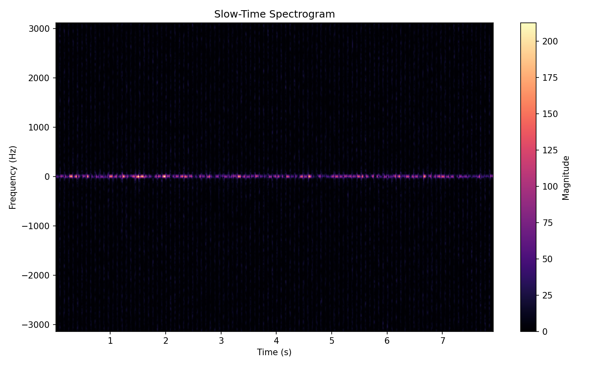
一个方向是时间，另一个是频率，颜色表示短时频谱强弱。周期竖条可能与帧间空隙和插值有关。当前 256 点窗口按 160 µs 网格计算，时长约 0.041 s，频率格间距为 1/0.041≈24.4 Hz；而低于 1 Hz 的运动周期超过 1 s，需要更长的真实观测窗口，不能靠这张短窗图分辨。
回到原理与代码。
10. 十二通道 I/Q
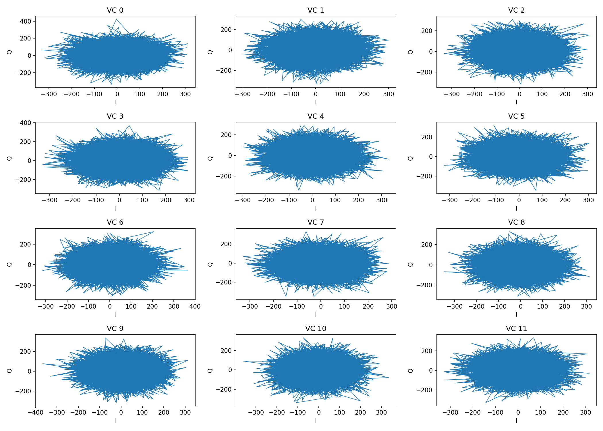
每个小图对应一个通道的 I/Q 轨迹。各图坐标范围不同，自动缩放会让不同幅度看起来相似；跨帧连线也不能当作空隙内真实轨迹。
回到原理与代码。
11. 十二通道相位
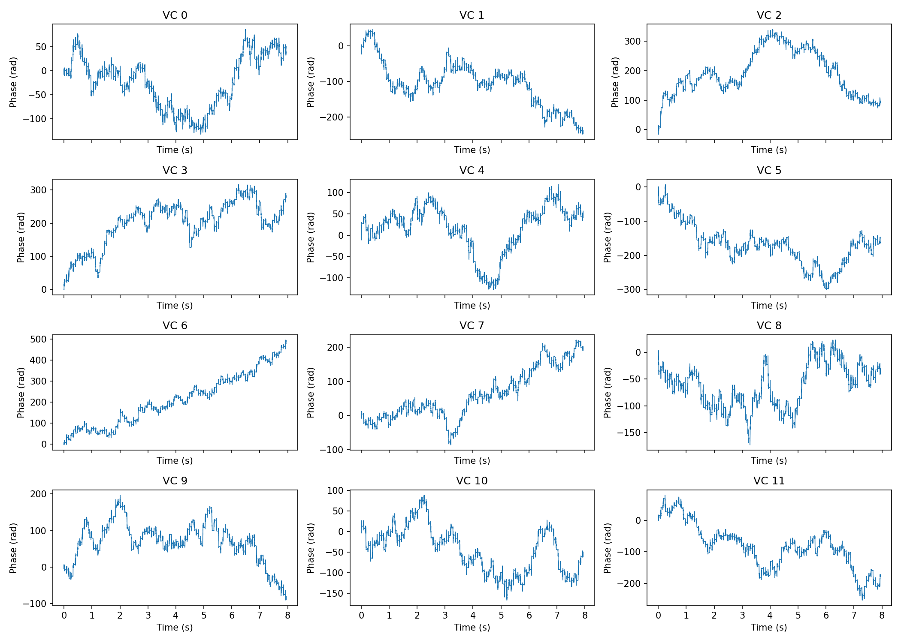
每个小图显示同一距离格的通道相位。曲线高低受通道相位偏置和解缠圈数影响。比较通道时，需要结合幅度判断信号强弱，并比较相位随时间的变化。
回到原理与代码。
12. 通道相干矩阵
矩阵比较的是不同通道在同一距离格的复数序列。记通道 \(a,b\) 的序列为 \(z_a[i],z_b[i]\)，图中数值为：
\[
C_{ab}=
\frac{\left|\sum_i z_a^*[i]z_b[i]\right|}
{\sqrt{\sum_i|z_a[i]|^2}\sqrt{\sum_i|z_b[i]|^2}}.
\]
星号表示共轭。分母消除整体幅度大小的影响；两个非零序列若只相差固定复数倍数，结果为 1。这里没有减去均值，因此不是常见的 Pearson 相关系数。
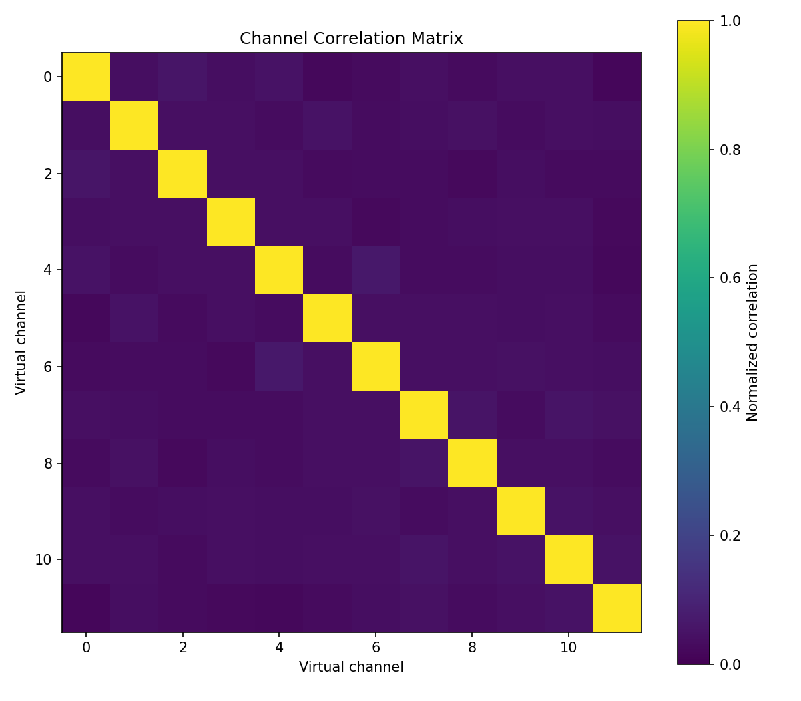
横纵轴都是通道编号，数值越接近 1，表示两个复数序列的归一化内积模越大。当前非零序列与自身比较为 1；低非对角值可能来自噪声、排列错误或相位变化，不能单独定位原因。
回到原理与代码。
13. 距离—空间频率图
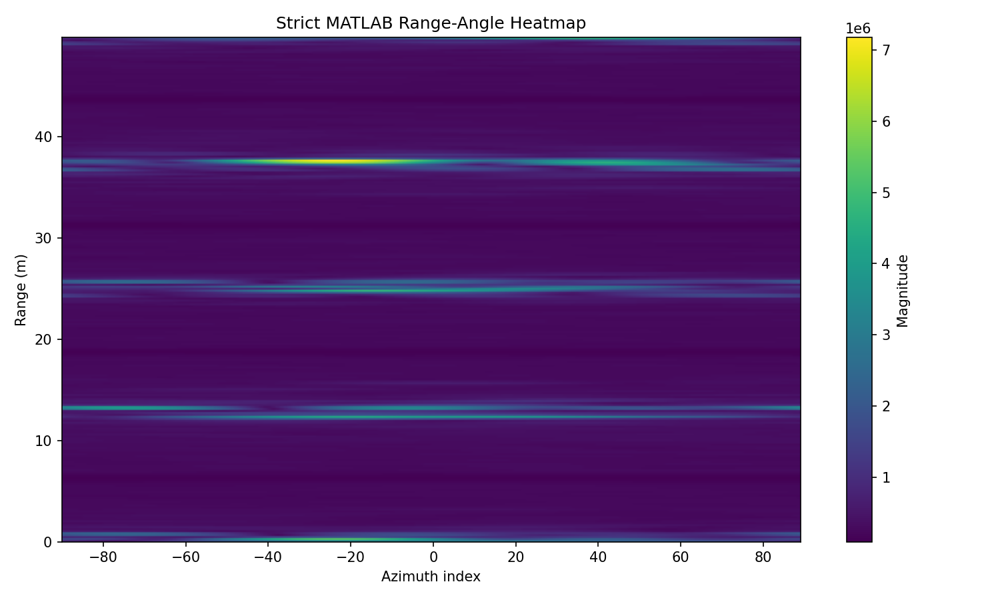
横轴是空间 FFT 格，纵轴是代码换算出的距离，颜色来自对 Doppler 维的幅度求和。输入仅 4 个通道有效，另 4 个为零；阵列和角度轴尚未校准。
回到原理与代码。
绘图示例
以单轮距离谱为例，下面假定已经有距离轴和距离 FFT 数组：
import matplotlib.pyplot as plt
plt.plot(range_axis[:128], np.abs(range_profile[:128,0,0]))
plt.xlabel('Range (m)')
plt.ylabel('FFT magnitude (a.u.)')
plt.grid(True)
plt.show()
plot(rangeAxis(1:128),abs(rangeCube(1:128,1,1)));
xlabel('Range (m)'); ylabel('FFT magnitude (a.u.)'); grid on;
同时写下选了哪一帧、哪一轮、哪个通道，用了什么窗和哪种数据排列。比较两种算法时保持横纵轴范围一致，否则自动缩放容易造成误判。